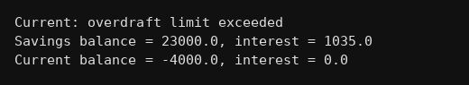

package interfaces;
public class Q242 {
interface Account {
void deposit(double amt);
void withdraw(double amt);
double calculateInterest();
double viewBalance();
}
static class SavingsAccount implements Account {
double bal;
SavingsAccount(double bal){ this.bal = bal; }
public void deposit(double amt){ bal = bal + amt; }
public void withdraw(double amt){
if(amt>bal) System.out.println("Savings: insufficient funds");
else bal = bal - amt;
}
public double calculateInterest(){ return bal*4.5/100; }
public double viewBalance(){ return bal; }
}
static class CurrentAccount implements Account {
double bal;
CurrentAccount(double bal){ this.bal = bal; }
public void deposit(double amt){ bal = bal + amt; }
public void withdraw(double amt){
// 5000 tak overdraft allowed
if(bal-amt < -5000) System.out.println("Current: overdraft limit exceeded");
else bal = bal - amt;
}
public double calculateInterest(){ return 0; }
public double viewBalance(){ return bal; }
}
public static void main(String[] args) {
Account a = new SavingsAccount(20000);
Account b = new CurrentAccount(3000);
a.deposit(5000);
a.withdraw(2000);
b.withdraw(7000);
b.withdraw(2000);
System.out.println("Savings balance = "+a.viewBalance()+", interest = "+a.calculateInterest());
System.out.println("Current balance = "+b.viewBalance()+", interest = "+b.calculateInterest());
}
}